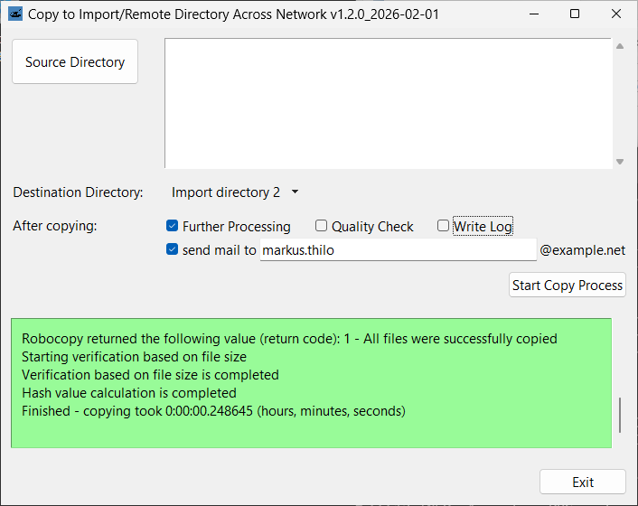

Copy directories to a fixed destination and build md5 hashes. Some criteria are checked while selecting the source directory.
The GUI is close to a well known copy tool so the old dogs don´t need to learn new tricks.
RoboCopy is used so this is for Windows.
Python 3.13 works fine. Newer versions should be no problem.
In addition to the standard libraries PyInstaller is required in case you want to build executables:
python -m pip install pyinstallerIn case your machine is offline, download the libraries on an online system:
python -m pip download pyinstallerTransport the .whl files to the offline machine and execute:
python -m pip install --no-index --find-links .\ pyinstallerYou might use git:
git clone https://codeberg.org/markusthilo/Cirdan.gitIf you want to generate executables to copy and run the tool in an environment without Python, change into the Cirdan directory and use the make script:
cd Cirdan
python make.pyTo copy the Cirdan directory it is possible to use the downloader script that is primarily intended to update an installed version:
python downloader.py .\ destination-dir\or
downloader.exe .\ destination-dir\if you have built executables.
The configuration files are in JSON file format:
config.json: admin given parameters as domain, paths etc.gui.json: basic parameters for the GUImail_template.json: example mail templateBy default there are language packs for English (labels_en.json) and German (labels_de.json).
config.json{
"labels_path": "$APP/labels_en.json",
"mail_template_path": "$APP/mail_example.json",
"local_path": "$HOME/AppData/Local/Cirdan/",
"target_path": "$HOME/Documents/",
"log_path": "$HOME/Documents/_logs/",
"mail_path": "$HOME/Documents/_mail/",
"update_path": "P:/Cirdan/",
"domain": "example.net",
"destinations": {
"Import directory 1": "import1",
"Import directory 2": "import2",
"Import directory 3": "import3"
},
"settings_name": "settings.json",
"log_name": "log.txt",
"lastlog_name": "lastlog.txt",
"tmplog_name": "tmplog.txt",
"crashlog_name": "crashlog.txt",
"tsv_name": "md5.txt",
"trigger_name": "trigger.txt",
"qualicheck_name": "qualicheck.txt",
"mail_name": "CIRDAN.json",
"source_whitelist": [
"^[0-9]{6}-.*"
],
"max_path_length": 230,
"source_blacklist": [
"^[^/]*/(?!EAV[0-9A-Z]{9})(?![^/]*\\.(pdf|txt)$).*$",
".*/forbidden.txt$",
".*/not_allowed/.*"
],
"destination_blacklist": [
"^[^/]*/trigger.txt",
"^[^/]*/qualicheck.txt",
"^[^/]*/done.txt"
]
}python cirdan.pypython cirdan.py -g directory-to-upload\python cirdan.py -hHaving executables, double clicking cirdan.exe should work.
MIT License
Copyright (c) 2025 Markus Thilo
https://opensource.org/license/MIT
This is not a commercial product with an army of developers and a department for quality control behind it. The author is not responsible for any malfunction and/or lost data. Use the software at your own risk.